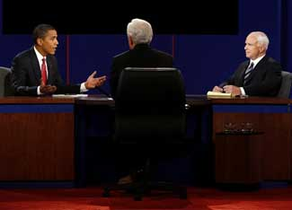

All roads lead to energy. Roller coaster gas prices, rising home heating costs, uneasy foreign policy relations, chaotic financial markets, concerns about climate change … all of these issues have direct or indirect links to energy - how we make it, where we get it and how we use it. Given that the presidential election is less than two weeks away, deciphering the various energy plans and positions of the candidates has become quite literally a hot topic. So before you head to the ballot box, here’s a look at some of the key energy positions of Senators John McCain and Barack Obama.
McCain has said he supports offshore drilling, but opposes drilling in the Arctic National Wildlife Refuge (ANWR). He also opposes taxing oil companies on windfall profits.
From Campaign Issues 2008, McCain voted:
Obama has said he opposes lifting the ban on new offshore drilling, but that he would accept offshore drilling if it’s necessary for enacting a comprehensive energy plan. He opposes drilling in ANWR, and supports a tax on windfall oil profits. He says that he will require oil companies to develop the land that they are currently leasing but not yet using for drilling (i.e., “use it or lose it.”).
Obama’s voting record from Campaign Issues 2008:
The candidates agree that greenhouse gases contribute to global warming and both propose mandatory cap-and-trade systems to reduce carbon emissions. John McCain’s plan calls to reduce emissions to 60 percent below 1990 levels by 2050, suggesting that “an increasing fraction of permits for emissions could be supplied by auction.” Barack Obama’s plan includes a reduction to 80 percent below 1990 levels in the same time frame, calling for 100 percent of permits for emissions to be purchased via auction.
John McCain currently says he supports increasing the Corporate Average Fuel Economy Standards (CAFÉ), without specifying what the new efficiency standard should be. He proposes a Clean Car Challenge which includes a $5,000 tax credit for every consumer that purchases a zero-emissions vehicle, and applies a graduated standard for other vehicles so that the credit increases as emissions decrease. He proposes to increase production of flex-fuel vehicles and notes the potential of alcohol-based alternative fuels, while calling to “eliminate mandates, subsidies, tariffs and price supports that focus exclusively on corn-based ethanol.”
McCain says he will propose a $300 million prize for the development of a battery package that opens the door for full commercial development of plug-in hybrids and fully electric vehicles, and that the battery should “deliver a power source at 30 percent of the current costs.”
Barack Obama says that he will increase fuel efficiency standards by 4 percent each year, and provide the United States auto industry with $4 billion to refit their manufacturing facilities in order to build the more efficient vehicles. He proposes getting 1 million plug-in hybrid vehicles on the road by 2015, and says that work should be done to ensure these cars are built in the United States.
Obama also says he will create a $7,000 tax credit for the purchase of “advanced” vehicles, as well as establish a National Low Carbon Fuel Standard (LCFS) to reduce the carbon in fuels 10 percent by 2020. He says he will “require 60 billion gallons of advanced biofuels to be phased into our fuel supply by 2030.”
You can find out more about the proposed Obama and McCain energy policies, including those for nuclear, coal and renewable energy sources, at Campaign Issues 2008. The New York Times offers a succinct look at the candidates’ proposed plans, and you can get additional information straight from the sources at the campaign Web sites for Barack Obama and John McCain.
Also, check out The Candidates Discuss Energy Issues and Grist’s interviews with (and fact sheets on) both Obama and McCain.
Still want more? As is becoming increasingly apparent, energy policy and the health of the environment are inextricably linked. Find out what the candidates are saying about the environment in A User-Friendly Guide to the Candidates’ Environmental Stances and Where do the Presidential Candidates Stand on Environmental Issues?
(Ready to vote, but not sure where to go or if your registration is current? Be sure to read Get Ready to Vote on Election Day.)
Climate change, foreign policy, domestic drilling, windfall taxes - what do you think? Which energy measures do you think make the most sense? Share your thoughts by posting a comment below.
|
 ASSOCIATED PRESS Energy - how we make it, where we get it and how we use it - is at the center of many of today's hot issues, from foreign policy to climate change. |
|
|